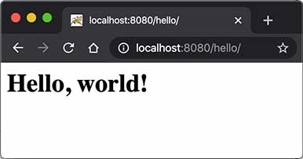

${user_name} @ ${created_at} ${delete_action}
${content}
${comment_replies}
${comment_action}
${comment_reply_form}
../git/BEFORE.md
在上一节中，我们看到，编写HTTP服务器其实是非常简单的，只需要先编写基于多线程的TCP服务，然后在一个TCP连接中读取HTTP请求，发送HTTP响应即可。
但是，要编写一个完善的HTTP服务器，以HTTP/1.1为例，需要考虑的包括：
这些基础工作需要耗费大量的时间，并且经过长期测试才能稳定运行。如果我们只需要输出一个简单的HTML页面，就不得不编写上千行底层代码，那就根本无法做到高效而可靠地开发。
因此，在JavaEE平台上，处理TCP连接，解析HTTP协议这些底层工作统统扔给现成的Web服务器去做，我们只需要把自己的应用程序跑在Web服务器上。为了实现这一目的，JavaEE提供了Servlet API，我们使用Servlet API编写自己的Servlet来处理HTTP请求，Web服务器实现Servlet API接口，实现底层功能：
┌───────────┐
│My Servlet │
├───────────┤
│Servlet API│
┌───────┐ HTTP ├───────────┤
│Browser│◀──────▶│Web Server │
└───────┘ └───────────┘
我们来实现一个最简单的Servlet：
// WebServlet注解表示这是一个Servlet，并映射到地址/:
@WebServlet(urlPatterns = "/")
public class HelloServlet extends HttpServlet {
protected void doGet(HttpServletRequest req, HttpServletResponse resp)
throws ServletException, IOException {
// 设置响应类型:
resp.setContentType("text/html");
// 获取输出流:
PrintWriter pw = resp.getWriter();
// 写入响应:
pw.write("<h1>Hello, world!</h1>");
// 最后不要忘记flush强制输出:
pw.flush();
}
}
一个Servlet总是继承自HttpServlet，然后覆写doGet()或doPost()方法。注意到doGet()方法传入了HttpServletRequest和HttpServletResponse两个对象，分别代表HTTP请求和响应。我们使用Servlet API时，并不直接与底层TCP交互，也不需要解析HTTP协议，因为HttpServletRequest和HttpServletResponse就已经封装好了请求和响应。以发送响应为例，我们只需要设置正确的响应类型，然后获取PrintWriter，写入响应即可。
现在问题来了：Servlet API是谁提供？
Servlet API是一个jar包，我们需要通过Maven来引入它，才能正常编译。编写pom.xml文件如下：
<project xmlns="http://maven.apache.org/POM/4.0.0"
xmlns:xsi="http://www.w3.org/2001/XMLSchema-instance"
xsi:schemaLocation="http://maven.apache.org/POM/4.0.0 http://maven.apache.org/maven-v4_0_0.xsd">
<modelVersion>4.0.0</modelVersion>
<groupId>com.itranswarp.learnjava</groupId>
<artifactId>web-servlet-hello</artifactId>
<packaging>war</packaging>
<version>1.0-SNAPSHOT</version>
<properties>
<project.build.sourceEncoding>UTF-8</project.build.sourceEncoding>
<project.reporting.outputEncoding>UTF-8</project.reporting.outputEncoding>
<maven.compiler.source>17</maven.compiler.source>
<maven.compiler.target>17</maven.compiler.target>
<java.version>17</java.version>
</properties>
<dependencies>
<dependency>
<groupId>jakarta.servlet</groupId>
<artifactId>jakarta.servlet-api</artifactId>
<version>5.0.0</version>
<scope>provided</scope>
</dependency>
</dependencies>
<build>
<finalName>hello</finalName>
</build>
</project>
注意到这个pom.xml与前面我们讲到的普通Java程序有个区别，打包类型不是jar，而是war，表示Java Web Application Archive：
<packaging>war</packaging>
引入的Servlet API如下：
<dependency>
<groupId>jakarta.servlet</groupId>
<artifactId>jakarta.servlet-api</artifactId>
<version>5.0.0</version>
<scope>provided</scope>
</dependency>
注意到<scope>指定为provided，表示编译时使用，但不会打包到.war文件中，因为运行期Web服务器本身已经提供了Servlet API相关的jar包。
要务必注意servlet-api的版本。4.0及之前的servlet-api由Oracle官方维护，引入的依赖项是javax.servlet:javax.servlet-api，编写代码时引入的包名为：
import javax.servlet.*;
而5.0及以后的servlet-api由Eclipse开源社区维护，引入的依赖项是jakarta.servlet:jakarta.servlet-api，编写代码时引入的包名为：
import jakarta.servlet.*;
教程采用最新的jakarta.servlet:5.0.0版本，但对于很多仅支持Servlet 4.0版本的框架来说，例如Spring 5，我们就只能使用javax.servlet:4.0.0版本，这一点针对不同项目要特别注意。
注意
引入不同的Servlet API版本，编写代码时导入的相关API的包名是不同的。
整个工程结构如下：
web-servlet-hello/
├── pom.xml
└── src/
└── main/
├── java/
│ └── com/
│ └── itranswarp/
│ └── learnjava/
│ └── servlet/
│ └── HelloServlet.java
├── resources/
└── webapp/
目录webapp目前为空，如果我们需要存放一些资源文件，则需要放入该目录。有的同学可能会问，webapp目录下是否需要一个/WEB-INF/web.xml配置文件？这个配置文件是低版本Servlet必须的，但是高版本Servlet已不再需要，所以无需该配置文件。
运行Maven命令mvn clean package，在target目录下得到一个hello.war文件，这个文件就是我们编译打包后的Web应用程序。
注意
如果执行package命令遇到Execution default-war of goal org.apache.maven.plugins:maven-war-plugin:2.2:war failed错误时，可手动指定maven-war-plugin最新版本3.3.2，参考练习工程的pom.xml。
现在问题又来了：我们应该如何运行这个war文件？
普通的Java程序是通过启动JVM，然后执行main()方法开始运行。但是Web应用程序有所不同，我们无法直接运行war文件，必须先启动Web服务器，再由Web服务器加载我们编写的HelloServlet，这样就可以让HelloServlet处理浏览器发送的请求。
因此，我们首先要找一个支持Servlet API的Web服务器。常用的服务器有：
还有一些收费的商用服务器，如Oracle的WebLogic，IBM的WebSphere。
无论使用哪个服务器，只要它支持Servlet API 5.0（因为我们引入的Servlet版本是5.0），我们的war包都可以在上面运行。这里我们选择使用最广泛的开源免费的Tomcat服务器。
要运行我们的hello.war，首先要下载Tomcat服务器，解压后，把hello.war复制到Tomcat的webapps目录下，然后切换到bin目录，执行startup.sh或startup.bat启动Tomcat服务器：
$ ./startup.sh
Using CATALINA_BASE: .../apache-tomcat-10.1.x
Using CATALINA_HOME: .../apache-tomcat-10.1.x
Using CATALINA_TMPDIR: .../apache-tomcat-10.1.x/temp
Using JRE_HOME: .../jdk-17.jdk/Contents/Home
Using CLASSPATH: .../apache-tomcat-10.1.x/bin/bootstrap.jar:...
Tomcat started.
在浏览器输入http://localhost:8080/hello/即可看到HelloServlet的输出：

细心的童鞋可能会问，为啥路径是/hello/而不是/？因为一个Web服务器允许同时运行多个Web App，而我们的Web App叫hello，因此，第一级目录/hello表示Web App的名字，后面的/才是我们在HelloServlet中映射的路径。
那能不能直接使用/而不是/hello/？毕竟/比较简洁。
答案是肯定的。先关闭Tomcat（执行shutdown.sh或shutdown.bat），然后删除Tomcat的webapps目录下的所有文件夹和文件，最后把我们的hello.war复制过来，改名为ROOT.war，文件名为ROOT的应用程序将作为默认应用，启动后直接访问http://localhost:8080/即可。
实际上，类似Tomcat这样的服务器也是Java编写的，启动Tomcat服务器实际上是启动Java虚拟机，执行Tomcat的main()方法，然后由Tomcat负责加载我们的.war文件，并创建一个HelloServlet实例，最后以多线程的模式来处理HTTP请求。如果Tomcat服务器收到的请求路径是/（假定部署文件为ROOT.war），就转发到HelloServlet并传入HttpServletRequest和HttpServletResponse两个对象。
因为我们编写的Servlet并不是直接运行，而是由Web服务器加载后创建实例运行，所以，类似Tomcat这样的Web服务器也称为Servlet容器。
由于Servlet版本分为<=4.0和>=5.0两种，所以，要根据使用的Servlet版本选择正确的Tomcat版本。从Tomcat版本页可知：
运行本节代码需要使用Tomcat>=10.x版本。
在Servlet容器中运行的Servlet具有如下特点：
doGet()或doPost()方法。复习一下Java多线程的内容，我们可以得出结论：
HttpServletRequest和HttpServletResponse实例是由Servlet容器传入的局部变量，它们只能被当前线程访问，不存在多个线程访问的问题；doGet()或doPost()方法中，如果使用了ThreadLocal，但没有清理，那么它的状态很可能会影响到下次的某个请求，因为Servlet容器很可能用线程池实现线程复用。因此，正确编写Servlet，要清晰理解Java的多线程模型，需要同步访问的必须同步。
给HelloServlet增加一个URL参数，例如传入http://localhost:8080/?name=Bob，能够输出Hello, Bob!。
提示：根据ServletRequest文档，调用合适的方法获取URL参数。
编写Web应用程序就是编写Servlet处理HTTP请求；
Servlet API提供了HttpServletRequest和HttpServletResponse两个高级接口来封装HTTP请求和响应；
Web应用程序必须按固定结构组织并打包为.war文件；
需要启动Web服务器来加载我们的war包来运行Servlet。